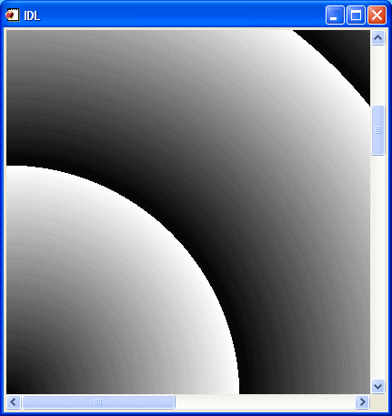

Another difference between a draw widget and either a graphics window created with the WINDOW procedure or an IDLgrWindow object is that draw widgets can include scroll bars. Setting the APP_SCROLL keyword or the SCROLL keyword to the WIDGET_DRAW function causes scrollbars to be attached to the drawing widget, which allows the user to view images or graphics larger than the visible area.
The amount of memory used by a draw widget is directly related to the size of the drawable area of the widget. If a draw widget does not have scroll bars, the entire drawable area is viewable. In this case, the size of the drawable area is controlled by the XSIZE and YSIZE keywords to WIDGET_DRAW.
With the addition of scroll bars, it is possible to display an image that is larger than the viewable area (the viewport ) of the draw widget. IDL provides two options for dealing with images larger than the viewport:
The concept of a virtual drawable area allows you to display portions of very large images in a draw widget without the need for enough memory to display the entire image. The price for this facility is the need to manually handle display of the correct portion of the image in an event-handling routine.
The following code creates a simple scrollable draw widget and displays an image.
Note:
This example is included in the file
draw_scroll.pro
in the
examples/doc/widgets
subdirectory of the IDL distribution. You can either open the file in an IDL editor window and compile and run the code using items on the
Run
menu, or simply enter
draw_scroll
at the IDL command prompt. See
Running the Example Code
if IDL does not run the program as expected. You may need to enter
DEVICE, RETAIN=2
at the IDL command prompt before running this example.
; Event-handler routine. Does nothing in this example.
PRO draw_scroll_event, ev
END
; Widget creation routine.
PRO draw_scroll
; Read an image for use in the example.
READ_JPEG, FILEPATH('muscle.jpg', $
SUBDIR=['examples', 'data']), image
; Create the base widget.
base = WIDGET_BASE()
; Create the draw widget. The size of the viewport is set to
; 200x200 pixels, but the size of the drawable area is
; set equal to the dimensions of the image array using the
; XSIZE and YSIZE keywords.
draw = WIDGET_DRAW(base, X_SCROLL_SIZE=200, Y_SCROLL_SIZE=200, $
XSIZE=(SIZE(image))[1], YSIZE=(SIZE(image))[2], /SCROLL)
; Realize the widgets.
WIDGET_CONTROL, base, /REALIZE
; Retrieve the window ID from the draw widget.
WIDGET_CONTROL, draw, GET_VALUE=drawID
; Set the draw widget as the current drawable area.
WSET, drawID
; Load the image.
TVSCL, image
; Call XMANAGER to manage the widgets.
XMANAGER, 'draw_scroll', base, /NO_BLOCK
END
In this example, the drawable area created for the draw widget is the full size of the displayed image. Since IDL handles the display of the image as the scroll bars are adjusted, no event-handling is necessary to update the display.
The following example shows how to use the APP_SCROLL keyword with WIDGET_DRAW using Object Graphics. As in the previous example, APP_SCROLL allows only the viewable part of the image to load in memory rather than loading the entire image at one time.
This example code demonstrates how WIDGET_DRAW's APP_SCROLL keyword can display an oversized image in a scrollable WIDGET_DRAW widget. In this case, “oversized” implies a dimension greater than 2048 pixels, which is a limit imposed by OpenGL for maximum window or pixel map size. The Object Graphics example in the example is an 864 x 2592 image.
; Event handler for the example application
; Since our application creates an object tree, we must
; explicitly destroy the objects when we destroy the
; top-level base widget.
PRO object_app_scroll_doc_event, event
IF TAG_NAMES(event, /STRUCTURE_NAME) EQ $
'WIDGET_KILL_REQUEST' THEN BEGIN
WIDGET_CONTROL, event.TOP, GET_UVALUE=state
OBJ_DESTROY, state.OWINDOW
WIDGET_CONTROL, event.TOP, /DESTROY
ENDIF
END
; Event handler for WIDGET_DRAW
PRO wdraw_event, event
; Case of the viewport event
IF event.TYPE EQ 3 THEN BEGIN
WIDGET_CONTROL, event.ID, GET_VALUE=oWindow
; By using /GEOMETRY we can deal with viewport scrolling
geom = WIDGET_INFO(event.ID, /GEOMETRY)
viewW = geom.XSIZE < geom.DRAW_XSIZE
viewH = geom.YSIZE < geom.DRAW_YSIZE
; oWindow and oView pass the drawing info
; and close all objects in the graphics hierarchy
; when window is closed.
oWindow->GetProperty, GRAPHICS_TREE=oView
oView->SetProperty, $
VIEWPLANE_RECT=[event.X, event.Y, viewW, viewH]
oWindow->Draw
ENDIF
END
; Widget Creation routine
PRO object_app_scroll_doc
;make a large Object Graphics image to display (8641 X 2592)
xs=864L
ys=3*864L
img1=dist(xs)
img=FLTARR(xs,ys)
img[0,0]=img1
img[0,xs]=SHIFT(img1,200,200)
img[0,xs*2]=SHIFT(img1,400,400)
; Initial viewport size
viewW = 400
viewH = 400
; Define the top level base.
tlb = WIDGET_BASE(/COLUMN, TLB_FRAME_ATTR=1, /TLB_KILL_REQUEST_EVENTS)
; APP_SCROLL allows XSIZE and YSIZE to handle large dimensions
; because only the part of the image in the viewport
; is loaded at one time.
wDraw = WIDGET_DRAW(tlb, XSIZE=xs, YSIZE=ys, GRAPHICS_LEVEL=2, $
X_SCROLL_SIZE=viewW, Y_SCROLL_SIZE=viewH, /APP_SCROLL, $
/VIEWPORT_EVENTS, EVENT_PRO='wdraw_event')
; Realize the top level base and draw widgets.
WIDGET_CONTROL, tlb, /REALIZE
WIDGET_CONTROL, wDraw, GET_VALUE=oWindow
oImg = OBJ_NEW('IDLgrImage', img, ORDER=1)
oModel = OBJ_NEW('IDLgrModel')
oView = OBJ_NEW('IDLgrView', PROJECTION=1, EYE=3., $
VIEWPLANE_RECT=[0,0,viewW,viewH], COLOR=[0,0,0])
oModel->Add, oImg
oView->Add, oModel
; Use GRAPHICS_TREE as an alternative to passing all
; the object states to the event handler.
oWindow->SetProperty, GRAPHICS_TREE=oView
oWindow->Draw, oView
state = { oWindow:oWindow }
WIDGET_CONTROL, tlb, SET_UVALUE=state
XMANAGER, 'object_app_scroll_doc', tlb
END
This example routine produces the following display:

WIDGET_DRAW using the APP_SCROLL keyword